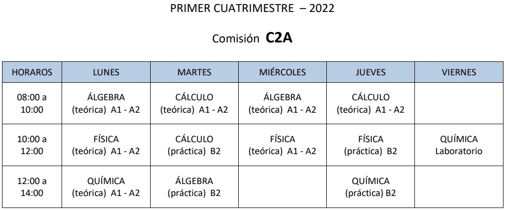

Links
Página FACET-UNT
Facet Virtual
Plan de Estudio ING. EN COMPUTACIÓN
CAyA 2022
Álgebra y Geometría Analítica
Cuadernillo Primera y Segunda Clase (1)
Respuestas Ejercicios (1)
Teoría Conjuntos - Power Point
Bibliografía - PNG
Cálculo
Cuadernillo Lógica Proposicional - Primera Clase
Cuadernillo Números Reales - Orden y Desigualdades - Segunda Clase
Bibliografía - PNG
Física
Cuadernillo Primera Clase
Cuadernillo Primera Clase - Cambio de Unidades
Primera Clase - Power Point
Respuestas Ejercicios (1) - Word
Cuadernillo Segunda Clase - Vectores
Segunda Clase - Power Point
Respuestas Ejercicios (1) - Word
Ejercicios (1)
Fundamentos de Química General e Inorgánica
Cuadernillo Nomenclatura de Compuestos Inorgánicos
Cuadernillo Primera y Segunda Clase
Trabajos Prácticos 1, 2 y 3
Sistemas de Representación
Elementos Para Dibujar - Video
Trazar Líneas Paralelas y Perpendiculares - Video
Formato A3 y A4 - Video
A3 - Márgenes y Rótulo
A3 - Márgenes y Rótulo - Medidas
A4 - Márgenes y Rótulo
A4 - Márgenes y Rótulo - Medidas
Uso Tipos de Líneas - PNG
Actividad 1 - Power Point
Introducción a Sistemas de Representación - Video
Proyecciones Ortogonales - Video
Proyecciones Ortogonales - Ejemplo - Video
Trabajo Práctico 1
Ingeniería en Computación - Primer Año - Módulo 1
Álgebra y Geometría Analítica I
Cuadernillo Vectores en Rn
Resolución Ejercicios - ZIP
Foro de Vectores
Programa de la Asignatura
Bibliografía
Organización del Cursado
Horarios de Clases
Condiciones de Regularidad
Foro de Novedades
Foro de Consultas Generales
Horarios Consultas Semanales - PNG
Cálculo I
Cuadernillo Valor Absoluto
Cuadernillo Funciones - Primera Parte
Cuadernillo Funciones - Segunda Parte
Ejercitación Adicional
Bibliografía
Foro de Novedades
Foro de Consultas Generales
Física I
Programa de la Asiganatura - Física I (CBI) - Problema en el link
Horarios de Consulta - PNG
Email (Consultas ADMINISTRATIVAS UNICAMENTE) - catedrafisicauno@herrera.unt.edu.ar
Foro de Novedades
Foro de Consultas
Fundamentos de Química General
Programa de la Asiganatura
Reglamento
Bibliografía
Clase I de Teoría - Materia, sustancias, propiedades, cambios de estado de la materia, sistemas (y su clasificación), mezclas y composición centesimal
Clase II de Teoría - Estructura atómica, tabla periódica, mol y fórmulas
Horarios Clases Prácticas - PNG
Foro de Novedades
Foro de Consultas
{kind=link}
{kind=link}
{kind=link}
{kind=link}
{kind=link}
{kind=link}